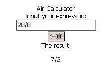

| |
1.手机用户界面
2.手机用户操作指南
一.普通计算器功能
显示分数:
显示浮点数:
显示大数:
显示科学计数:
二.符号计算
(1).常量
- %e - Euler’s Number
- %pi -

- %phi - the golden mean (
 ) )
- %i - the imaginary unit (
 ) )
- inf - real positive infinity (
 ) )
- minf - real minus infinity (
 ) )
- infinity - complex infinity
(2).factor 进行因数分解
或者多项式的因子计算
factor(30!)
=> 
factor(x^2 + x -6)
=> (x+3)")
(3).expand 进行多项式展开
expand((x+3)^4)
=> 
(4).化简
简化有理数表达式：
ratsimp((x^2-1)/(x+1))
=> 
简化三角方程：
trigsimp(2*cos(x)^2 + sin(x)^2)
=> 
(5).solve 进行方程求解
solve(x^3=1,x)
=> ![\displaystyle \left[ x={{\sqrt{3}\,i-1}\over{2}} , x=-{{\sqrt{3}\,i+1}\over{2}} , x=1 \right]](http://math-blog.com/wp-content/latex/pictures/d6fee10c9270a09a696c50c5779b8e33.gif "\displaystyle \left[ x={{\sqrt{3}\,i-1}\over{2}} , x=-{{\sqrt{3}\,i+1}\over{2}} , x=1 \right]")
solve([x - 2*y = 14, x + 3*y = 9],[x,y])
=> ![\left[ \left[ x=12 , y=-1 \right] \right]](http://math-blog.com/wp-content/latex/pictures/e2ab8ed6a972b64d420d68fb6ba413fa.gif "\left[ \left[ x=12 , y=-1 \right] \right]")
(6).limit 求极限
limit((1+1/x)^x,x,inf)
=> %
limit(sin(x)/x,x,0)
=> 
limit(2*(x^2-4)/(x-2),x,2)
=> 
limit(log(x),x,0,plus)(右极限)
=>minf(负无穷)
limit(sqrt(-x)/x,x,0,minus)(左极限)
=>minf(负无穷)
(7). diff 求微分
diff(sin(x), x)
=> ")
diff(x^x, x)
=>x^x*(log(x)+1)
(8).integrate 求不定积分和定积分
integrate(1/x, x)
=>log(x)
integrate(x+2/(x -3), x, 0,1)
=> 
integrate(%e^(-x^2),x,minf,inf)
=>  (9).sum 进行累加
sum(i,i,1,100)
=>5050
(10).product 进行累积
product(i,i,1,100)
=>3628800
(11).Taylor 级数展开
taylor(sin(x),x,0,7)
=>x-x^3/6+x^5/120-x^7/5040
(9).sum 进行累加
sum(i,i,1,100)
=>5050
(10).product 进行累积
product(i,i,1,100)
=>3628800
(11).Taylor 级数展开
taylor(sin(x),x,0,7)
=>x-x^3/6+x^5/120-x^7/5040
|